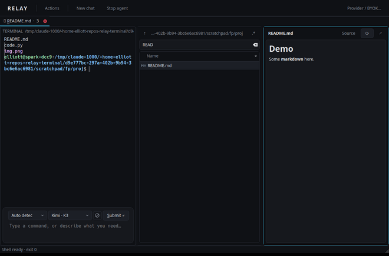

Ubuntu 24.04 LTS
Qt 5 / KDE Frameworks 5 build.
v=0.1.0-beta.1
wget https://github.com/elliottash/relay-terminal/releases/download/v$v/relay_${v}_ubuntu24.04_amd64.deb
sudo apt install ./relay_${v}_ubuntu24.04_amd64.deb
Beta · Linux
Relay embeds Konsole's real terminal and adds a text editor for your commands. Type a shell command or ask for something in plain language. The agent runs on your own API key, and its commands and diffs print right in the terminal.

Mouse selection, multi-line commands, undo, clipboard and history in a real text field. Commands stay plain text.
Relay embeds KonsolePart, not an imitation. vim, less, ssh and password prompts get your keys directly while they run.
git status goes to the shell; why is this build failing? goes to the
agent. Routing never calls a model, and you can force either side.
Every command the agent runs, every file it reads and every diff it writes prints in the terminal as it happens. Nothing enters your shell history.
Each pane has its own shell, prompt and conversation. Open a folder explorer or a file preview
next to the terminal with relay open PATH.
An actions palette and shortcut presets for Relay, Warp, VS Code and Konsole habits.



Coming with the first beta release. The commands below
are what installation will look like once v0.1.0-beta.1 is published on
GitHub Releases. Until then, build
from source. Packages are available for x86_64 and arm64.
Qt 5 / KDE Frameworks 5 build.
v=0.1.0-beta.1
wget https://github.com/elliottash/relay-terminal/releases/download/v$v/relay_${v}_ubuntu24.04_amd64.deb
sudo apt install ./relay_${v}_ubuntu24.04_amd64.debQt 6 / KDE Frameworks 6 build.
v=0.1.0-beta.1
wget https://github.com/elliottash/relay-terminal/releases/download/v$v/relay_${v}_ubuntu26.04_amd64.deb
sudo apt install ./relay_${v}_ubuntu26.04_amd64.debQt 6 / KDE Frameworks 6 build.
v=0.1.0-beta.1
wget https://github.com/elliottash/relay-terminal/releases/download/v$v/relay_${v}_debian13_amd64.deb
sudo apt install ./relay_${v}_debian13_amd64.debRelease and development packages.
yay -S relay-terminal
# or the latest main branch
yay -S relay-terminal-gitNeeds Qt 6, KF6 Parts and CoreAddons, the Konsole part, CMake, Python 3.10+ and Bash.
sudo dnf install cmake gcc-c++ qt6-qtbase-devel kf6-kparts-devel \
kf6-kcoreaddons-devel konsole-part python3
git clone https://github.com/elliottash/relay-terminal
cd relay-terminal && ./scripts/build.sh
cmake --install buildEach release lists SHA-256 checksums.
v=0.1.0-beta.1
wget https://github.com/elliottash/relay-terminal/releases/download/v$v/SHA256SUMS
sha256sum --check --ignore-missing SHA256SUMSReplace amd64 with arm64 on ARM machines. Then start Relay from
your application menu or run relay --workspace ~/project. For API keys in the desktop keyring,
install libsecret-tools (Debian/Ubuntu) or libsecret (Arch).
secret-tool), or read from an environment variable.Beta. Relay is usable day to day on Linux, but expect rough edges and changes between releases. Please report problems on GitHub Issues.
Rich prompt integration covers Bash. With zsh, fish, tmux or over SSH, use native terminal input (F12).
Platforms. Linux with KDE Frameworks 5 or 6. Flatpak is planned next. macOS and Windows need a portable terminal engine and are on the roadmap, not in this beta.
License. GPL-3.0-or-later. Relay uses Konsole's part as installed on your system and does not include Warp or other proprietary code.